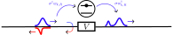
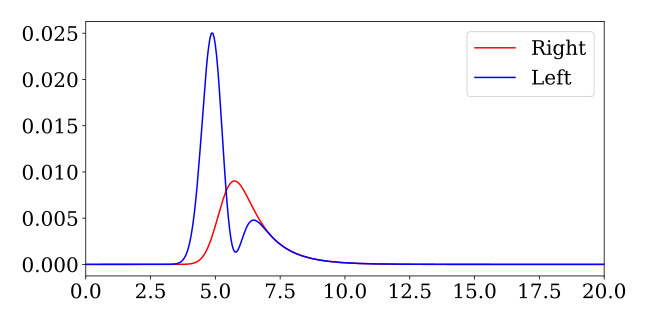
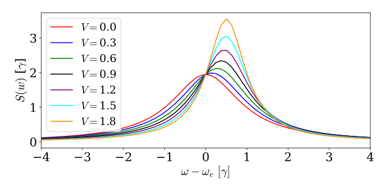

Input-Output Relations
Theory
In waveguide QED systems, the waveguide modes themselves can often also interact. This interaction can happen due to e.g. a partially transmitting and reflecting element that scatters one waveguide mode into another. In the input-output formalism, this is described by a coupling matrix $\mathbf{C}$. A perfectly balanced beamsplitter would thus have the coupling matrix $\mathbf{C} = 1/\sqrt{2}\begin{pmatrix} 1 & - i \\ -i & 1 \end{pmatrix}$ which relates the input waveguide modes with the output modes (output here referring to the mode after the interaction) by the following relation:
\[\begin{equation*} \mathbf{W}_{\mathrm{out}} = \mathbf{C} \mathbf{W}_{\mathrm{in}} \end{equation*}\]
where
\[\begin{equation*} \mathbf{W}_{in} = \begin{pmatrix} w_{in,1}(t) \\ w_{in,2}(t) \\ \vdots \\ w_{in,N}(t) \end{pmatrix}, \ \ \ \ \ \ \ \ \mathbf{W}_{out} = \begin{pmatrix} w_{out,1}(t) \\ w_{out,2}(t) \\ \vdots \\ w_{out,N}(t) \end{pmatrix} \end{equation*}\]
Are vectors containing each waveguide mode. More generally, when a local quantum system with the Hamiltonian $H_s$ and creation and annihilation operators $a$ and $a^\dagger$ is coupled to the waveguide it is shown in [4], that fundamental input-output relations can be derived from the Hamiltonian:
\[\begin{equation*} H= H_{\mathrm{s}}+ \sum_{i=1}^N \int d \nu \hbar \nu w_{i}^{\dagger}(\nu) w_{i}(\nu)+\sum_{i=1}^N \hbar \sqrt{\gamma_i} \int \frac{d \nu}{\sqrt{2 \pi}}\left(w_{i}^{\dagger}(\nu) a+a^{\dagger} w_{i}(\nu)\right) +\sum_{i \neq j} \hbar V_{i j} \int \frac{d \nu}{\sqrt{2 \pi}} \int \frac{d \nu^{\prime}}{\sqrt{2 \pi}} w_{i}^{\dagger}(\nu) w_{j}(\nu^\prime) \end{equation*}\]
where $w_{i}(\nu)$ is the annihilation operator for waveguide mode $i$ with frequency $\nu$, $\gamma_i$ is the coupling between the local system with Hamiltonian $H_s$ and waveguide mode $i$, and $V_{i,j} =V_{j,i}$ is the unitless coupling between waveguide modes. $N$ is here the total number of waveguide modes. The resulting input-output relations depend on the evolution of the local system and thus become:
\[\begin{equation*} \begin{gathered} \frac{d}{d t} a=-i\left[a, H_{\mathrm{c}}\right]-\Sigma a+\mathbf{k}^T \mathbf{W}_{\mathrm{in}} \\ \mathbf{W}_{\text {out }}(t)=\mathbf{C} \mathbf{W}_{\mathrm{in}}(t)+a(t)\mathbf{d} \end{gathered} \end{equation*}\]
Here $\Sigma$ describes a self-energy correction due to the interaction with the waveguides, and $\mathbf{k}=\mathbf{d}$ is the effective coupling between the waveguides and quantum system. All quantities depend on the waveguide coupling $\mathbf{V}$ and waveguide-system coupling $\mathbf{\Gamma}$
\[\begin{equation*} \textbf{V} = \begin{pmatrix} 0 & V_{1,2} & \cdots & V_{1,N} \\ V_{2,1} & 0 & \cdots & V_{2,N} \\ \vdots & \vdots & \ddots & \vdots \\ V_{N,1} & V_{N,2} & \cdots & 0 \\ \end{pmatrix}, \ \ \ \ \ \ \ \ \ \ \mathbf{\Gamma} = \begin{pmatrix} \gamma_1 \\ \gamma_2 \\ \vdots \\ \gamma_N \end{pmatrix} \end{equation*}\]
as:
\[\begin{equation*} \mathbf{C} \equiv\left(\mathbf{I}-\frac{i}{2} \mathbf{V}\right)\left(\mathbf{I}+\frac{i}{2} \mathbf{V}\right)^{-1}, \quad \mathbf{d} = \mathbf{k} \equiv-i\left(\mathbf{I}+\frac{i}{2} \mathbf{V}\right)^{-1} \mathbf{\Gamma}, \quad \Sigma \equiv \frac{1}{2} \mathbf{\Gamma}^T\left(\mathbf{I}+\frac{i}{2} \mathbf{V}\right)^{-1} \mathbf{\Gamma} \end{equation*}\]
from this, it is evident that the coupling with the system $\mathbf{k}=\mathbf{d}$ is not independent of the waveguide coupling $\mathbf{V}$. As we shall see, this can be interpreted as the waveguide coupling $\mathbf{V}$ altering the local density of optical states and thus changing the coupling between the waveguides and the local system. In the time-bin formalism, we cannot simply simulate the Hamiltonian, since coupling between waveguide modes is not allowed in a collision picture. Instead, we can introduce an effective coupling and simulate the Hamiltonian:
\[\begin{equation*} H= \tilde{H}_{\mathrm{s}}+ \sum_{i=1}^N \int d \nu \hbar \nu w_{i}^{\dagger}(\nu) w_{i}(\nu)+\sum_{i=1}^N \hbar \int \frac{d \nu}{\sqrt{2 \pi}}\left(\tilde{\Gamma}_i^* w_{i}^{\dagger}(\nu) a+ \tilde{\Gamma}_i a^{\dagger} w_{i}(\nu)\right) \end{equation*}\]
where $\tilde{\Gamma}_i$ is the i'th element of $\mathbf{\tilde{\Gamma}} = (\mathbf{I} + \frac{i}{2}\mathbf{V})^{-1} \mathbf{\Gamma}$ and $\tilde{H}_{c} = H_c - i\mathrm{Im}\{ \Sigma\} a^\dagger a$ is the normalized system Hamiltonian due to the self-energy correction (note only the imaginary part since the real part correction will be introduced from the renormalized coupling). The resulting input-out relations will from this Hamiltonian be:
\[\begin{align*} & \frac{d}{d t} a= -i\left[a, \tilde{H_{\mathrm{c}}} \right] -\mathrm{Re}(\Sigma) a + \tilde{\mathbf{k}}^T \mathbf{W}_{\mathrm{in}} \\ & \widetilde{\mathbf{W}}_{\text {out }}(t)= \mathbf{\tilde{C}} \mathbf{W}_{\mathrm{in}}(t)+a(t)\tilde{\mathbf{d}} \end{align*}\]
where $\tilde{\mathbf{d}} = -i \left(\left(\mathbf{I}+\frac{i}{2} \mathbf{V}\right)^{-1} \right)^* \mathbf{\Gamma}$, $\tilde{\mathbf{k}} = -i \left(\left(\mathbf{I}+\frac{i}{2} \mathbf{V}\right)^{-1} \right) \mathbf{\Gamma}$, and $\tilde{\mathbf{C}} = \mathbf{I}$. Noticeably, the renormalized coupling $\tilde{\mathbf{C}}$ does not correspond to the original input-output relations, by multiplying $\widetilde{\mathbf{W}}_{\text {out }}(t)$ with $\mathbf{C}$ we can restore the correct relations:
\[\begin{align*} & \frac{d}{d t} a= -i\left[a, \tilde{H_{\mathrm{c}}} \right] -\mathrm{Re}(\Sigma) a + \tilde{\mathbf{k}}^T \mathbf{W}_{\mathrm{in}} \\ & \mathbf{C}\widetilde{\mathbf{W}}_{\text {out }}(t)= \mathbf{C} \mathbf{W}_{\mathrm{in}}(t)+a(t)\tilde{\mathbf{k}} \end{align*}\]
where we used that $\mathbf{C} \mathbf{\tilde{d}} = \mathbf{\tilde{k}$. In the time-bin picture, we can thus use the Hamiltonian:
\[\begin{equation*} H_k= H_{\mathrm{s}}+ \sum_{i=1}^N \hbar \tilde{\Gamma}_i^* w_{k,i}^{\dagger} a+ \tilde{\Gamma}_i a^{\dagger} w_{k,i} \end{equation*}\]
to obtain $\ket{\tilde{\psi}}_{\mathrm{out}} = \sum_i \int \widetilde{W}_{out,i}^\dagger \ket{\emptyset} \otimes \ket{\psi}_{s1}$ where $\ket{\psi}_{s1}$ is the system state after the simulation. To get the correct output state we then perform the transformation according to $\mathbf{C}$ such that:
\[\begin{equation*} \ket{\psi}_{\mathrm{out}} = C^\dagger \ket{\tilde{\psi}}_{\mathrm{out}} = \sum_{i,j} \int C_{i,j}^\dagger \widetilde{W}_{out,i}^\dagger \ket{\emptyset} \otimes \ket{\psi}_{s1} = \sum_i \int W_{out,i}^\dagger \ket{\emptyset} \otimes \ket{\psi}_{s1} \end{equation*}\]
We here only show the case where the output state is a superposition of single-photon states, but this can be generalized to multiple-photon states (although this has not been implemented yet). In the following, we show how we can use the above to predict Fano-resonances in waveguide systems.
Waveguide with Partially Transmitting Element
In the following, we consider a waveguide with two propagating modes (left and right) and a scattering element $V$ that couples the two modes with each other. The waveguide is also coupled to a quantum emitter through a total decay rate of $\gamma$ meaning a coupling of $\gamma/2$ to each waveguide mode. A sketch of the system can be seen below:  This is almost the system considered in Multiple Waveguides, except that we have now introduced the scattering element V.
As mentioned above, we can capture the dynamics of the system by renormalizing the coupling depending on the waveguide interaction $V$. This can be done automatically in WaveguideQED by giving a vector of the waveguide-emitter coupling, which in this case is: $\mathbf{\Gamma} = \begin{pmatrix} \gamma/2 \\ \gamma/2 \end{pmatrix}$ and the desired waveguide coupling $\mathbf{C}$. For example, if we want a fully reflecting element we would choose $\mathbf{C} = \begin{pmatrix} 0 & 1 \\ 1 & 0 \end{pmatrix}$. The function effective_hamiltonian returns the renormalized Hamiltonian:
times = 0:0.05:50
dt = times[2] - times[1]
bw = WaveguideBasis(1,2,times)
be = FockBasis(1)
C = [0 -1.0im; -1.0im 0]
γ=1
G = [sqrt(γ/dt),sqrt(γ/dt)]
H = effective_hamiltonian(bw,be,C,G)With this, we can study the scattering of single photon pulse. In the following, we initialize the state and simulate the scattering.
ξfun(t1,σ,t0) = sqrt(2/σ)* (log(2)/pi)^(1/4)*exp(-2*log(2)*(t1-t0)^2/σ^2)
ψ_in = onephoton(bw,1,ξfun,1,5) ⊗ fockstate(be,0)
ψ_out_tilde = waveguide_evolution(times,ψ_in,H)We now have obtained $\ket{\tilde{\psi}}_{\mathrm{out}}$ and we then apply the transformation of $\mathbf{C}$ to get $\ket{\psi}_{\mathrm{out}}$. This can be done with the WaveguideTransform operator:
C_transform = WaveguideTransform(bw,C) ⊗ identityoperator(be)
ψ_out = C_transform*ψ_out_tildePlotting the output state, we see that compared with the example in Multiple Waveguides the transmitted (right) and reflected mode (left) are interchanged due to the fully reflecting medium $V$:
fig,ax = subplots(1,1,figsize=(9,4.5))
ax.plot(times,abs.(OnePhotonView(ψ_out,1)).^2,"r-",label="Right")
ax.plot(times,abs.(OnePhotonView(ψ_out,2)).^2,"b-",label="Left")
ax.set_xlim(0,20)
ax.legend()
plt.tight_layout()
The shapes are qualitatively the same as in Multiple Waveguides but if we study the actual numbers, we will see that the effective emitter-waveguide coupling has been renormalized due to the scattering element. This is especially clear if we consider an initially excited emitter and its emission spectrum. In the following, we vary the waveguide coupling through $V$ and see how the emission spectrum (Fourier transformation of the time-wavefunction $\xi(t)$) changes.
fig,ax = subplots(1,1,figsize=(9,4.5))
color_plots = ["red","blue","green","black","purple","cyan","darkorange","darkblue","darkgreen"]
Vs = 0:0.3:2
G = [sqrt(γ/dt),sqrt(γ/dt)]
for (i,V) in enumerate(Vs)
C_sweep,_ = WaveguideQED.io_relations_from_V([0 V;V 0],G)
H_sweep = effective_hamiltonian(bw,be,C_sweep,G)
psi_in = zerophoton(bw) ⊗ fockstate(be,1)
psi_out = waveguide_evolution(times,psi_in,H_sweep)
freq,spec = fftket(psi_out,1)
ax.plot(freq,2*pi*abs.(spec*(freq[2]-freq[1])).^2,ls="-",color=color_plots[i],label=L"$V=$"*"$(round(Vs[i],digits=2))")
end
ax.legend(loc="upper left",fontsize=18)
ax.set_xlim(-4,4)
ax.set_xlabel(L"$\omega - \omega_e \ [\gamma]$")
ax.set_ylabel(L"$S(w)$ [$\gamma$]")
We can see that the frequency of the emission spectrum shift as we increase $V$ but also the FWHM of the Lorentzian narrows due to an increase in the emitter lifetime (decrease in the effective emitter-waveguide coupling).